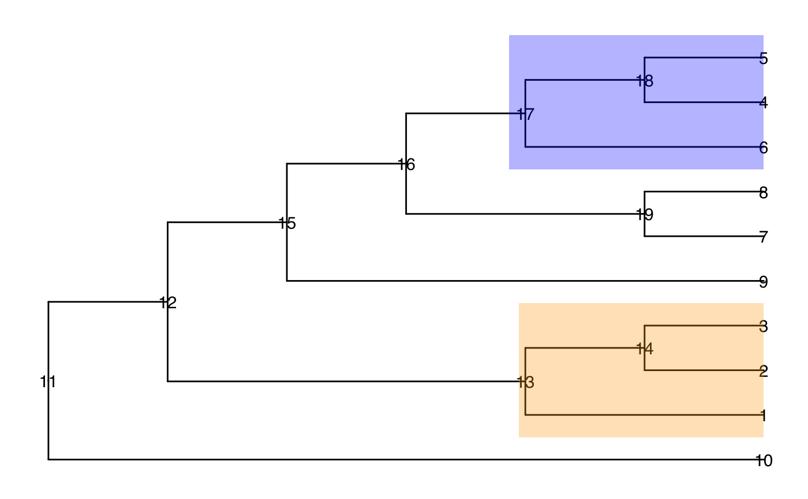

findExcl.RdfindExcl is to find all branches that have leaves exclusive from the
specified branches. In the same time, these branches group the leaves to have
the min number of branches. Examples are given in example section to better
clarify this.
findExcl(tree, node, use.alias = FALSE)
| tree | A phylo object. |
|---|---|
| node | A numeric or charater vector specifying the nodes. |
| use.alias | A logical value, TRUE or FALSE. If TRUE, the alias name is used to name the output vector. |
library(ggtree) data(tinyTree) ggtree(tinyTree, branch.length = "none") + geom_text2(aes(label = node)) + geom_hilight(node = 17, fill = "blue", alpha = 0.3) + geom_hilight(node = 13, fill = "orange", alpha = 0.3)# To output branches that have leaves not in the two colored branches, the # shortest result here is three. They can't be grouped as less branches # without including the leaves in the specified branches. findExcl(tree = tinyTree, node = c(17, 13))#> Node_19 t5 t3 #> 19 9 10